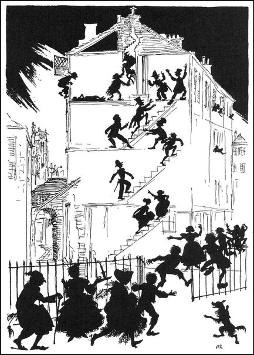
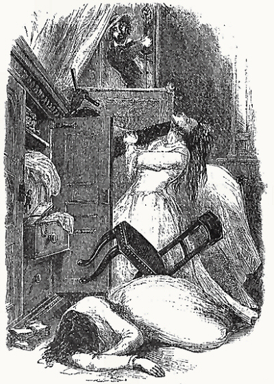

Аналитические способности человека сами по себе весьма мало подходят под анализ. Мы ценим их только по их выводами. Мы знаем о них только то, что они доставляют человеку громадный источник самых истинных наслаждений. Сильный человек наслаждается своей физической мощью, любит упражнения, в которых играют роль его мускулы, а аналитик предпочитает мозговую деятельность, дающую ему возможность исследования. Ему доставляют удовольствие даже самые обыкновенные случаи, представляющие возможность применить свои способности, даже загадки, ребусы, иероглифы.

Способность разгадывания или расследования зависит много от математических знаний, но высшую математику называют несправедливо анализом, потому что не всякий расчет можно назвать этим именем. Игрок в шашки, например, очень удачно рассчитывает, не прибегая к анализу. Оставляя в стороне абстракции, обратимся к примеру и возьмем игру в шашки, когда действуют только четыре дамки, и, следовательно, нельзя предполагать недостатка внимания. Очевидно, что победа может остаться только на стороне того, – мы берем противников равных, – чья тактика ловчее или у кого сильнее мышление. За недостатком обыкновенных средств, аналитик анатомирует мысли своего противника и часто внезапно находит единственное средство – иногда до глупости простое – втянуть его в ошибку или неверный расчет. Вист давно известен как прекрасная школа для того, что именуется искусством расчета; известно также, что многие выдающиеся умы питали, казалось бы, необъяснимую слабость к висту, пренебрегая шахматами, как пустым занятием. В самом деле, никакая другая игра не требует такой способности к анализу.

Лучший в мире шахматист – шахматист, и только, тогда как мастерская игра в вист сопряжена с умением добиваться победы и в тех более важных областях человеческой предприимчивости, в которых ум соревнуется с умом. Говоря «мастерская игра», я имею в виду ту степень совершенства, при которой игрок владеет всеми средствами, приводящими к законной победе. Эти средства не только многочисленны, но и многообразны и часто предполагают такое знание человеческой души, какое недоступно игроку средних способностей. Кто внимательно наблюдает, тот отчетливо и помнит, а следовательно, всякий сосредоточенно играющий шахматист может рассчитывать на успех в висте, поскольку руководство Хойла (основанное на простой механике игры) общепонятно и общедоступно. Чтобы хорошо играть в вист, достаточно, по распространенному мнению, соблюдать «правила» и обладать хорошей памятью.
К началу страницы